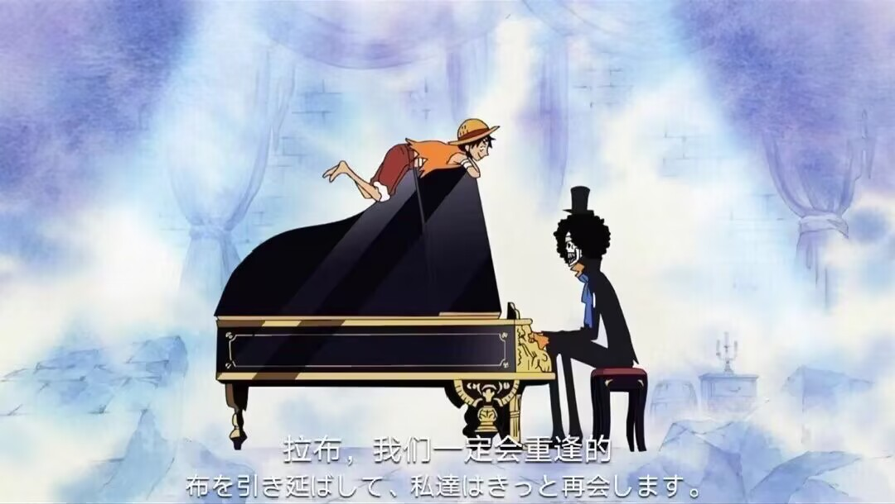

布鲁克
布鲁克，人称鼻歌布鲁克，草帽一伙音乐家。草帽大船团大干部之一，人称“灵魂之王”。原本是某国护卫队团长，后加入伦巴海贼团，50年前跟鲸鱼拉布约定在“双子岬”重逢。后来在魔鬼三角地带遇到敌人并遭遇毒手，因黄泉果实的能力，灵魂走出黄泉并准备回身体时，在魔鬼三角地带迷路一年，找到的身体已变成骷髅，但爆炸头仍然存在，自此他只能以骷髅状态生存。幽灵岛战役结束后，从路飞口中得知伙伴拉布现在平安无事的消息，为了履行和拉布的约定，才正式加入草帽一伙。
Learn More